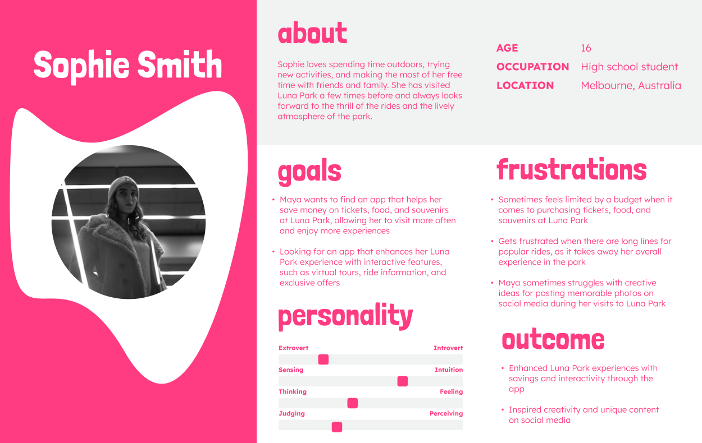
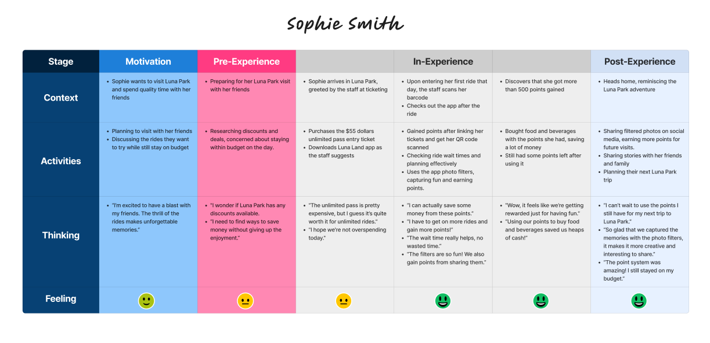
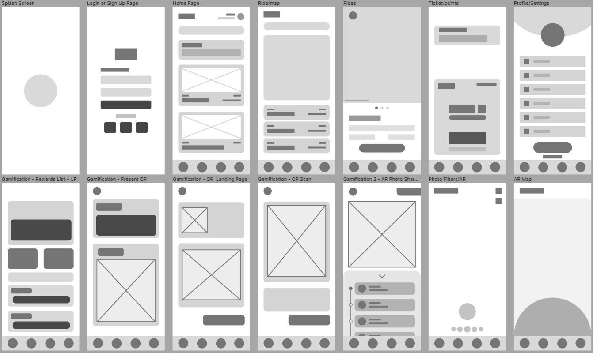
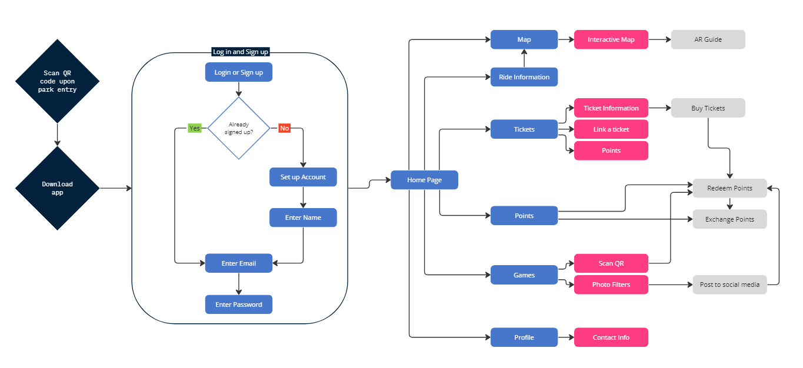
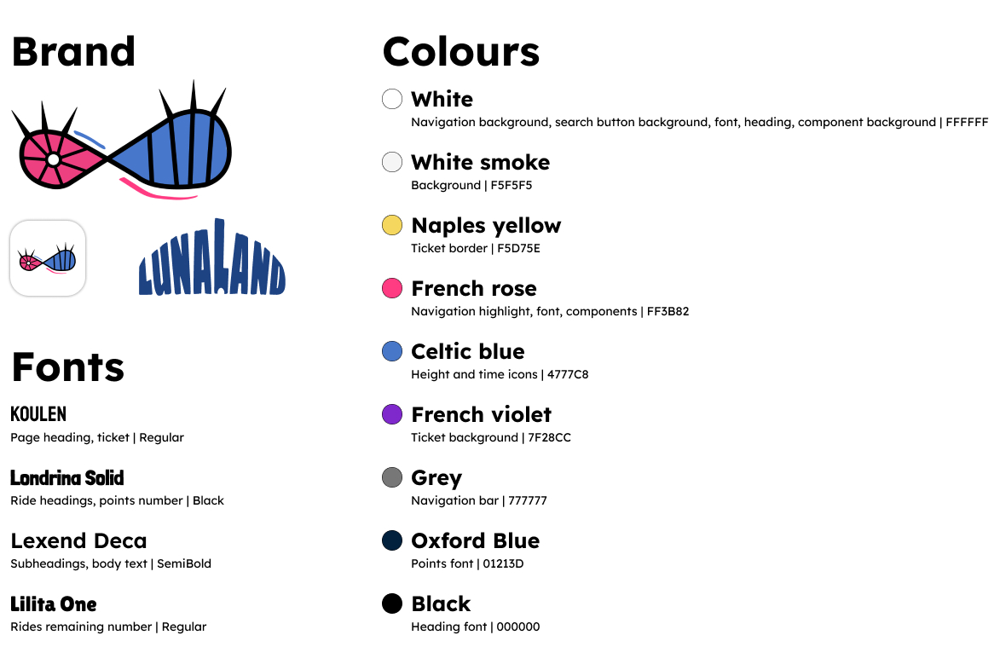
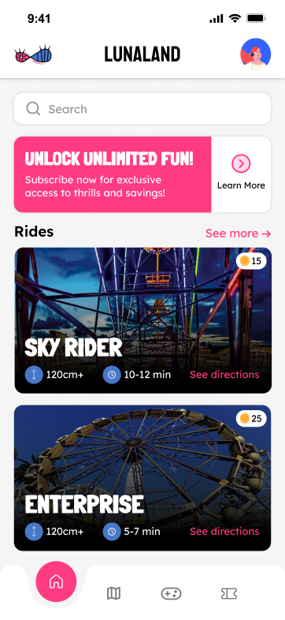
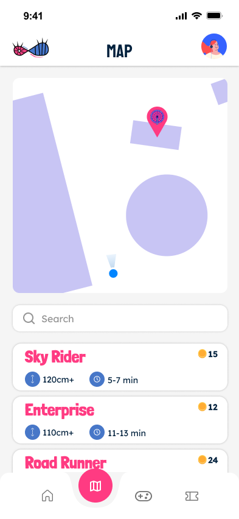
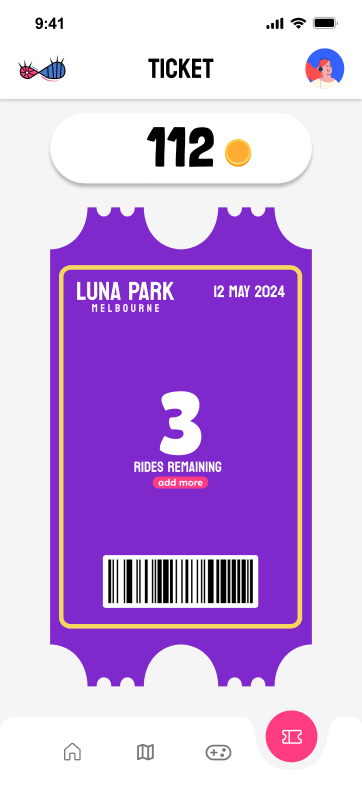
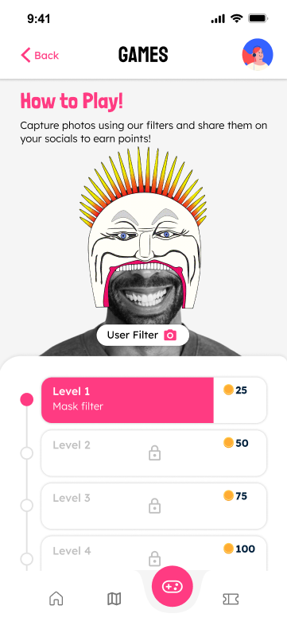
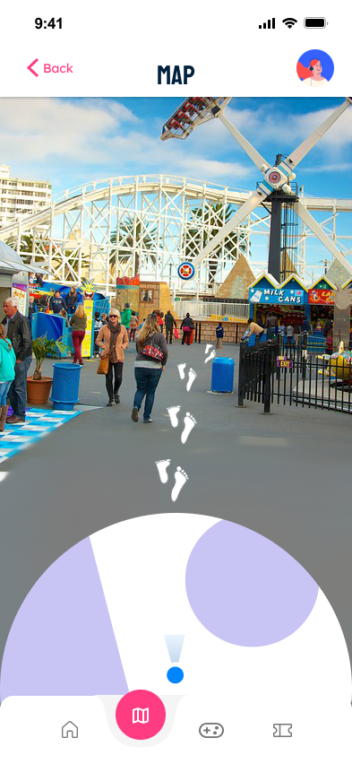

Luna Park app prototype “LunaLand” & product video
LunaLand is a concept app that turns a day at Luna Park Melbourne into a game, with ride info, AR directions and a points system, shown in a 65-second product video.
- My role
- UI designer and AR designer: Map and Ticket screens, style guide, user persona, logo concepts
- Year
- 2024
- Tools
- Figma, Rotato, Adobe Premiere Pro, After Effects
The story behind it
Luna Park is a Melbourne icon, but its charm is let down by long queues and high prices. Our team of five designers set out to fix that with an app, from the first research through to the product video. This was a university exercise based on a client brief, not an official Luna Park project.
The brief
Luna Park wanted creative digital experiences, such as AR, VR, gamification and interactive maps, that tie into its history, character and visual style. The solution had to drive profit, build customer loyalty and spread through social media, work for all ages and be culturally sensitive. It also had to be a smart-device app.
Research & concept
We started with what visitors were already saying. Reviews on TripAdvisor and Google pointed to the same problems:
- Long waits for rides
- High prices for tickets and food
- Unclear signage and a hard-to-navigate layout
- Limited variety for older children and adults
- Cleanliness, maintenance and inconsistent customer service
- Frustration with the pay-per-ride system
We built user personas to cover a range of visitors, and compared the Disneyland, Universal Studios and Village Roadshow Theme Parks apps with a SWOT analysis of each. I created Sophie Smith, a 16-year-old high school student from Melbourne.
Sophie loves trying new activities with her friends and family, and has visited Luna Park a few times. She wants an app that helps her save money on tickets, food and souvenirs so she can visit more often, with interactive features such as ride information and exclusive offers. She gets frustrated by budget limits and long queues, and struggles to find creative ideas for social media photos. Our user journey map follows her day: she plans around her budget, buys a pass and downloads the app on arrival, has her ticket scanned at her first ride, checks wait times and uses the photo filters, spends her points on food and drinks, and shares her photos afterwards to earn more.
Our answer, LunaLand, centres on a points system. Visitors scan QR codes before each ride and earn points for sharing photos made with custom AR filters. They redeem the points for food, drinks and souvenirs through their ticket barcode. An optional monthly subscription adds unlimited entry, queue-skipping access and bonus points. The app also includes an interactive map and 360 video previews of rides.


My contribution
- UI design in Figma. I worked with another designer on the team on the low and high fidelity mockups. I designed the Map and Ticket screens, and we adjusted each other’s screens to keep everything consistent.
- Branding. I created the style guide covering the fonts and colours for the interface, and developed four illustrated ideas for the app logo and icon.
- User research. I created the Sophie Smith user persona.
- Writing and planning. I helped write the abstract, wrote the UI and AR sections of the development process, and helped build the budget.
Design process
Low fidelity. The first wireframes captured our early ideas and showed how features related to each other. Going through them again and again let us drop features that were redundant or impractical and expand the ideas that worked.
High fidelity. We then refined the core screens, keeping fonts, spacing, colours, sizing and component shapes consistent. We stayed close to Luna Park’s current look so the app wouldn’t feel disconnected from its website and brand, and used bold colours and bubbly text to keep it fun. Because we each had different ideas about styling, we talked constantly and worked in Figma at the same time, which helped us arrive at one consistent style.
Structure. The team mapped the app in a sitemap, from scanning the QR code at the park entrance and downloading the app, through sign-up, to the home page and its sections: map, ride information, tickets, points, games and profile.
Style guide. I wrote the style guide that sets the fonts and colours for every screen. Koulen is used for page headings and the ticket, Londrina Solid for ride names and points, Lexend Deca for subheadings and body text, and Lilita One for the rides-remaining number. French rose highlights the navigation, Celtic blue colours the height and time icons, and the ticket is French violet with a Naples yellow border.






Gamification & AR
Points. Riders earn points by scanning the QR code at a ride’s entrance. Each ride has set points, with bonuses for quieter rides on the day. They can also earn points by sharing Luna Park photos to Facebook, Instagram or Twitter, with limits so people use both systems. In the prototype, photo filters unlock level by level, and each level is worth more coins.
AR. Augmented reality works inside the map. Like Google Maps, augmented footsteps show the path ahead and guide the user to the ride they’ve chosen. Pointing the camera at a ride brings up extra information about it.
More features. Rides get 360 video previews, so people can see a ride before they go or relive it afterwards, which keeps them engaged in the app for longer. The sound design we planned is playful and themed around an amusement park, with popping balloons, classic jingles and cartoon effects. A page on Luna Park’s history was planned for a later stage.


Budget
We planned the project as if it were being built for real, with a total budget of $47,157.
- Wages
- $45,000
- Software
- $169
- Tools
- $800
- User testing
- $1,000
- App store launch
- $188
The product video
The final piece is a 65-second product video that shows the app working. Before editing, we planned it as a short script and shot list:
- An introduction that mentions the main features
- The map, with a visitor walking through the park while augmented footsteps guide them to a ride
- The rides list, showing the LunaCoins you can earn and the wait time for each ride, and the 360 preview
- Earning LunaCoins through challenges, photo filters and QR code scans
- The ticket, where coins are redeemed at the in-park reward booth
- An end screen with the LunaLand logo and the line “A whole new theme park experience for Melbourne”
We used Rotato to present the app screens on a phone, and put the footage together in Premiere Pro and After Effects.
My part was storyboarding, crafting the motion graphics in After Effects and editing the advertisement in Premiere Pro.
Reflection
Out of all my uni groups, this one was probably my favourite. We all had very different skillsets and backgrounds but we worked really well together. We all had trust in each other’s abilities which allowed everyone to focus on their respective roles, resulting in a more polished final concept.
References
- Burning House (2022) ‘Why Use 360 Video?’, Burning House Blog
- Discovery (2016) Mega Coaster: Get Ready for the Drop (360 Video), YouTube
- Google Reviewers (2024) Luna Park Melbourne, Google Reviews
- Liquona (2022) ‘Benefits of 360 Videos’, Liquona Blog
- Luna Park (2024) Luna Park website
- Mendelson, A (2022) Who Doesn’t Like Rewards? How Gamification Can Benefit Your Park, Vantage
- TripAdvisor reviewers (2024) Luna Park Melbourne, TripAdvisor